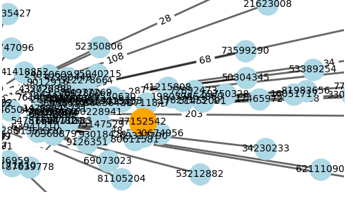
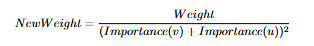

How it works
The Idea
The idea for this project was taken from some online word guessing games, namely Proximity and Contexto. I wanted to implement these games but for yugioh cards instead of words. I decided that the most intuitive idea for how 'close' two cards are would be how frequently the two cards are played together, as this means cards that players often view as linked to each other would be very close.
Creating the Network
The first step was to aquire a large number of decks, and the lists of cards in each of them. For this I used a large number of decks from ygoprodeck.com. A large number of decks however were 'too casual' or anime focused decks, I removed a large number of these from the database by blacklisting specific cards (swords of revealing light, the god cards, etc). These choices were made to keep the highest number of playable decks possible whilst removing decks with a large number of less meaningful card choices. After this I created a network of cards with edges weighted with the number of times each set of card appears together. It looks something like this, but much larger:
This network is now ready to be turned from the absolute number of times two cards are played together to proximity values. The formula for this looks somewhat like this (but is being adjusted):
Creating the Game
Now that I have a network of proximity values I can create the actual gameplay. Firstly a random card needs to be chosen, but it is important to chose a card that is interesting to guess and people may know, but not a card too popular that wont be interesting to guess as often. To do this I used a 'metropolis random walk'. In order to make sure cards that are too popular dont get visited as often however the probability function for the walk was made quadratic instead, and looks similar to this:

Then once a random card is selected the server produces a sorted list of the proximity to all of the other cards it has connections to. Some processing is then done in order to make this value more meaningful, firstly all of the values are logged in order to make the values from guessing more linear. Then the values are normalized so that they can be interpreted properly by the game.